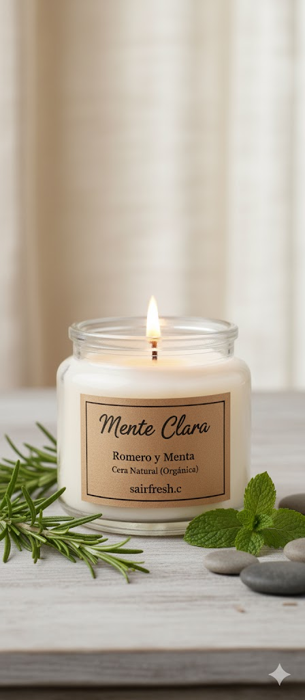
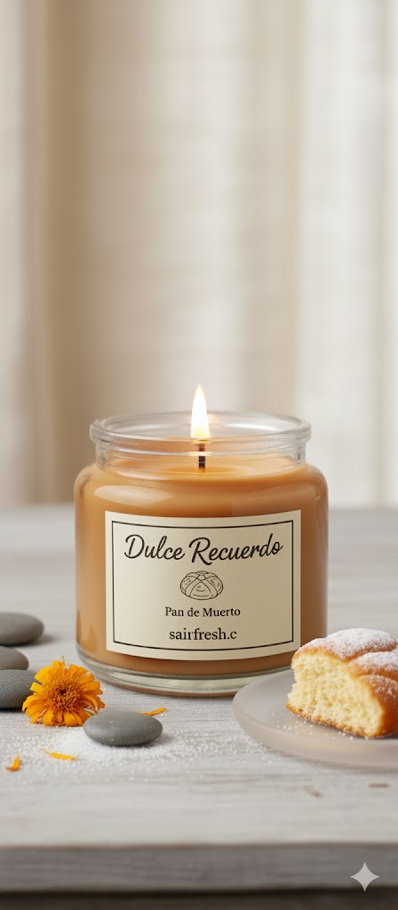

Nuestras velas
Sueños yen

Hecha con cera ecológica y aceite esencial de manzanilla, desprende un aroma dulce y suave que ayuda a reducir el estrés y mejorar el ánimo, aportando paz y serenidad al hogar.
Mente clara

Elaborada con cera natural y aceites esenciales de menta y romero, ofrece un aroma fresco y revitalizante que purifica el ambiente, estimula la concentración y renueva la energía. Ideal para espacios de trabajo o estudio.
Velas de temporada
Dulce recuerdo

Inspirada en las tradiciones mexicanas, esta vela artesanal combina cera natural con un dulce aroma a pan recién horneado, con notas de azahar, vainilla y canela. Su fragancia evoca calidez, nostalgia y hogar, perfecta para la temporada de Día de Muertos o para crear un ambiente acogedor todo el año.